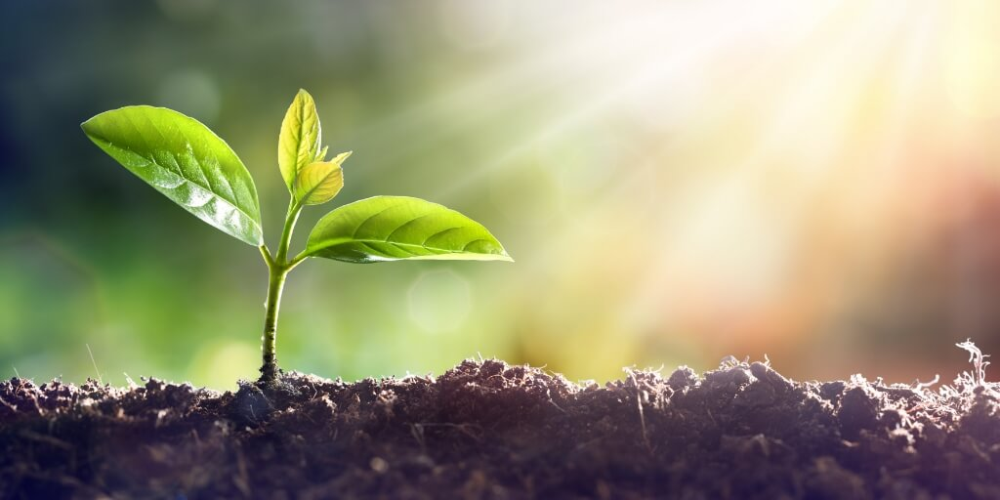
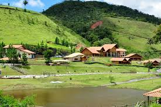
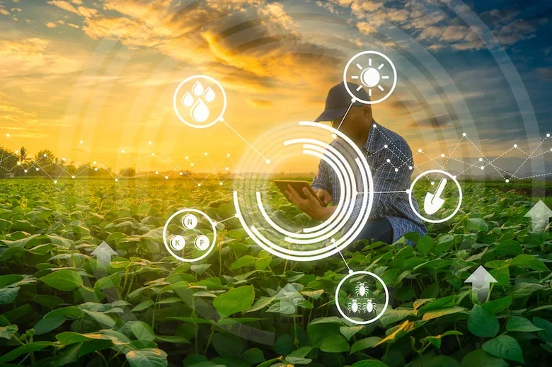
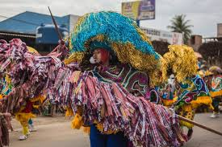

Do Campo à Sua Mesa
Conheça a jornada de João, que traz seus produtos orgânicos diretamente da fazenda para a feira na capital, conectando produtores e consumidores.
Descubra como o campo e a cidade se complementam, gerando inovação, cultura e um futuro mais equilibrado para todos.
Explore Mais
O campo abastece as cidades com produtos frescos e de qualidade, promovendo uma alimentação mais saudável e sustentável.

A cidade busca no campo o sossego, a natureza e experiências autênticas, impulsionando o turismo e a economia local.

A tecnologia da cidade encontra a sabedoria do campo, gerando inovações que beneficiam ambos os ambientes.

A riqueza cultural do campo se manifesta nas cidades, e vice-versa, enriquecendo o patrimônio imaterial de todos.
Conheça a jornada de João, que traz seus produtos orgânicos diretamente da fazenda para a feira na capital, conectando produtores e consumidores.

Como um grupo de estudantes da cidade desenvolveu um aplicativo para auxiliar pequenos agricultores a otimizar suas colheitas.

A história de um festival que anualmente celebra as tradições rurais na área urbana, promovendo a troca cultural e a valorização das raízes.

Data: 25 de Julho de 2025
Local: Parque da Cidade
Uma oportunidade para adquirir produtos frescos diretamente dos produtores rurais e participar de oficinas sobre sustentabilidade.

Data: 15 de Agosto de 2025
Local: Fazenda Esperança (visita guiada)
Venha vivenciar o dia a dia de uma fazenda sustentável, com atividades para toda a família e degustação de produtos típicos.

Data: 05 de Setembro de 2025
Local: Centro Cultural Urbano
Admire e adquira peças únicas de artesanato produzidas por artesãos do campo, que trazem a essência da vida rural para a cidade.


Tem uma história para compartilhar ou deseja mais informações? Fale conosco!